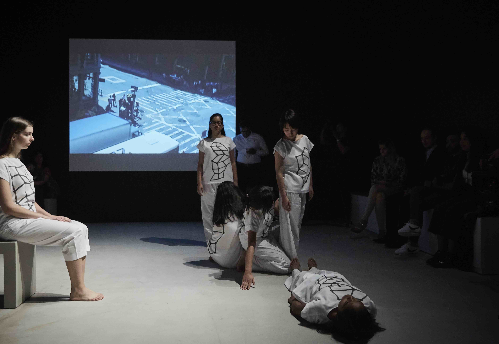
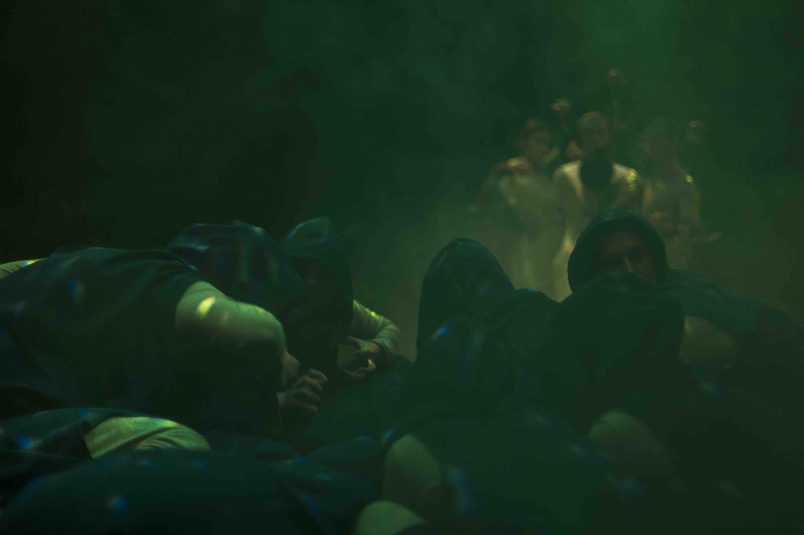
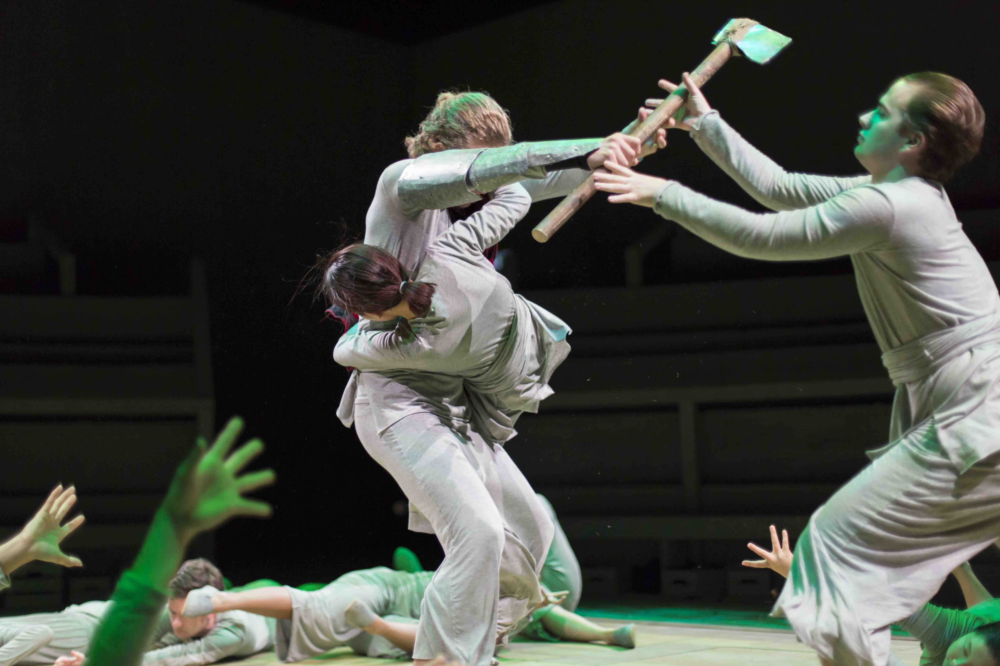
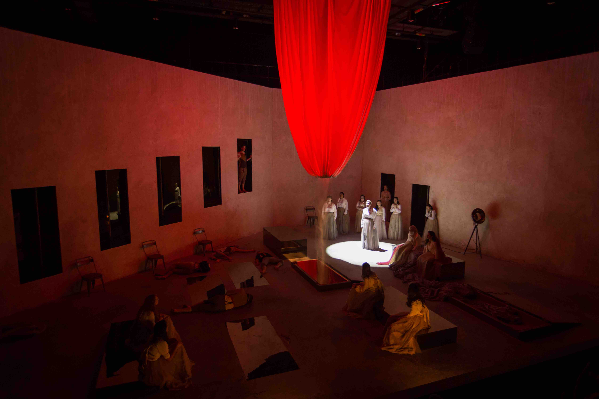

MARIKA NIKO


Movement
RHINO
2018 Performance, Berlin Germany
RHINO tackles Eugene Ionesco’s 'Rhinoceros' through dissecting the chronology of transfiguration, specifically between the human and non-human world. The performance questions whether it is possible to determine the tipping point of this transformation, or whether it is in fact an ongoing process. Investigating the mundane reality of the characters in Ionesco’s play: the ways in which they communicate with one another, the relationships they build and break, and the choices they make, RHINO attempts to understand the complexity of why someone transforms.

RHINO trailer from Salber Williams on Vimeo.
The Creative Act: Performance, Process, Presence
2017 Performance, Abu Dhabi UAE
In collaboration with the Guggenheim Abu Dhabi and artist Susan Hefuna, we created a 20 minutes movement piece which explores the tension, energy, and connection that exists in between other human bodies.


Photo Credits To The Guggenheim Museum Abu Dhabi
Yelow Brick Road
2017 Performance, Abu Dhabi UAE
Theatrical adaptation by Tomi Tsunoda of The Wonderful Wizard of Oz, that explores contemporary conversations around climate crisis, displacement, bureaucracy, survival, and dependency.



Courtesy of The NYUAD Theater Program, Photo Credits To Koh Terai
Mujeres Cabalgando En La Arena
2016 / Play
Directed by Carlos Diaz Leon from Chile, this production works with three of Federico García Lorca's literature to question gender, love, identity, and desire.


Courtesy of The NYUAD Theater Program, Photo Credits To Koh Terai
ATRIUM
2016 Video Performance, Abu Dhabi UAE
ATRIUM, choreographed by Alexandre Bagot, is the product of an exploration of the intersection of bodies in movement and of the creative methodologies involved in choreography.
ATRIUM | Alexandre Bagot & Marika Niko from Alexandre Bagot on Vimeo